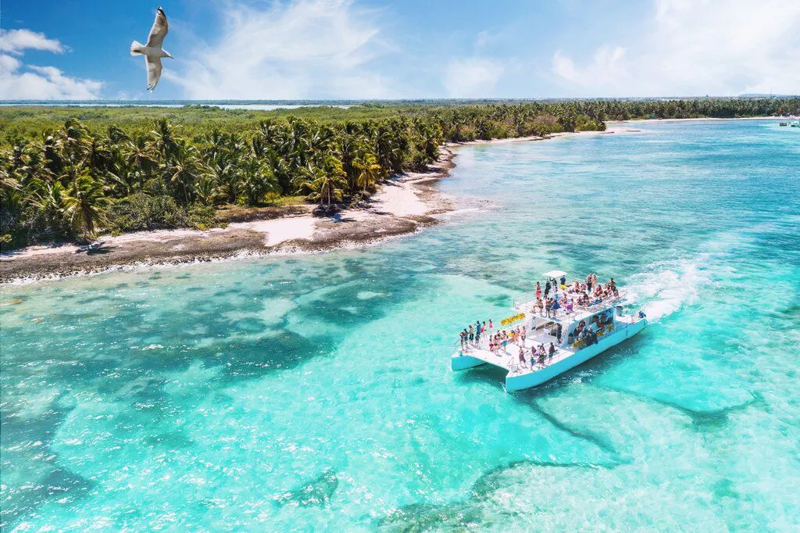
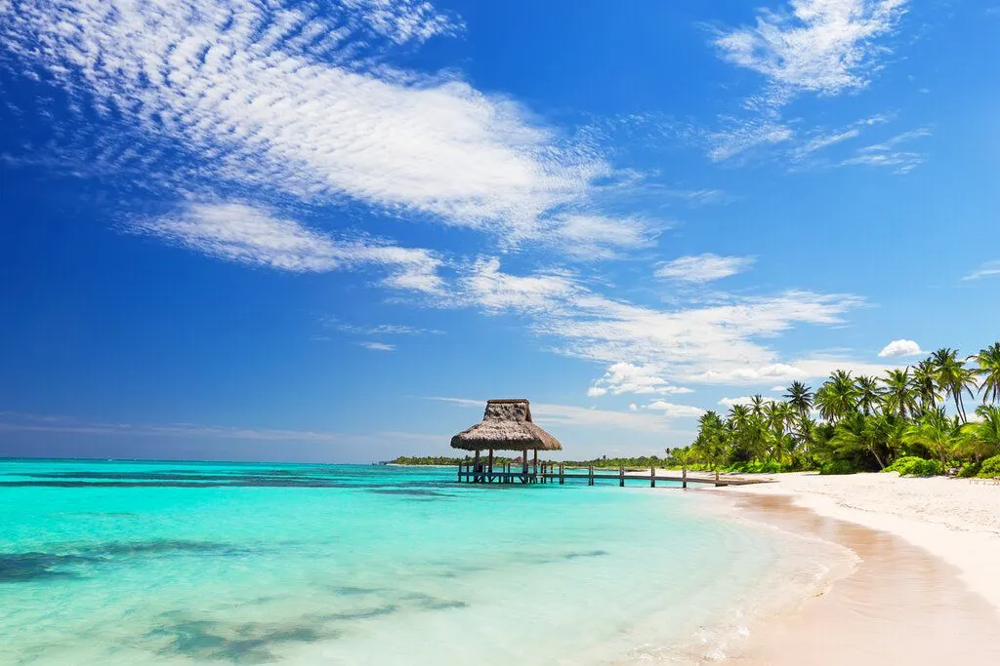
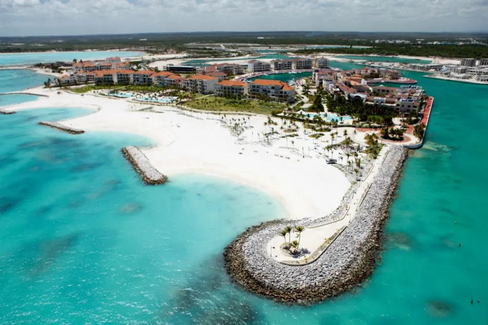
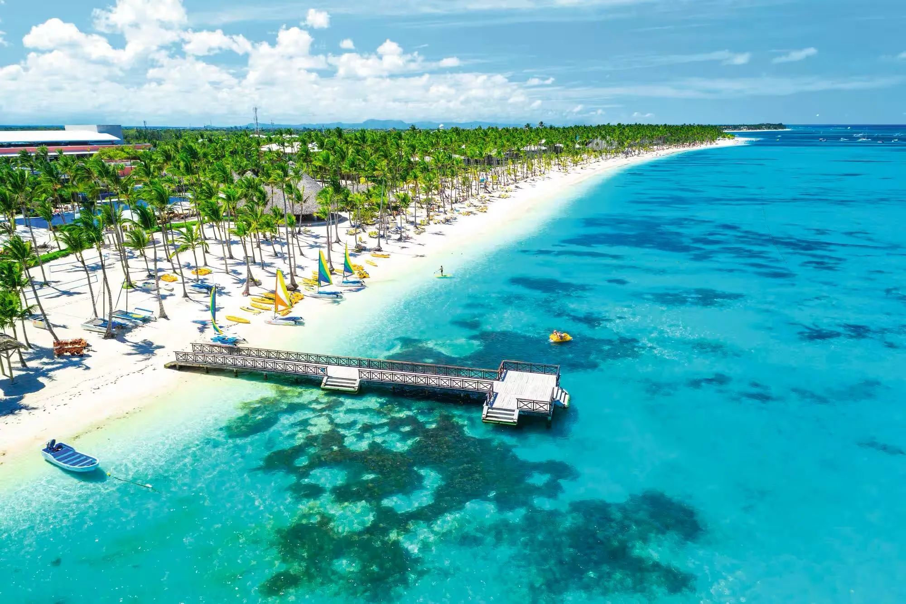
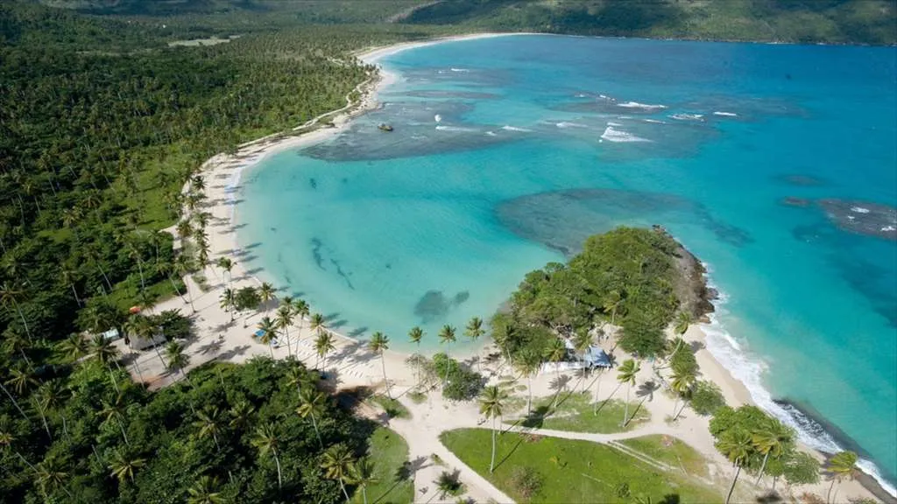
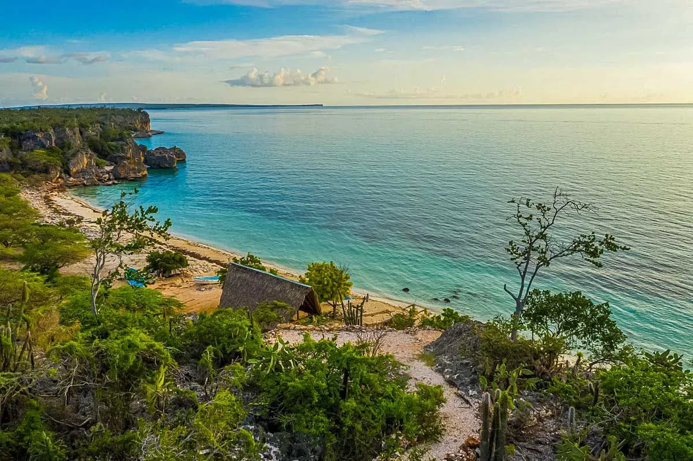
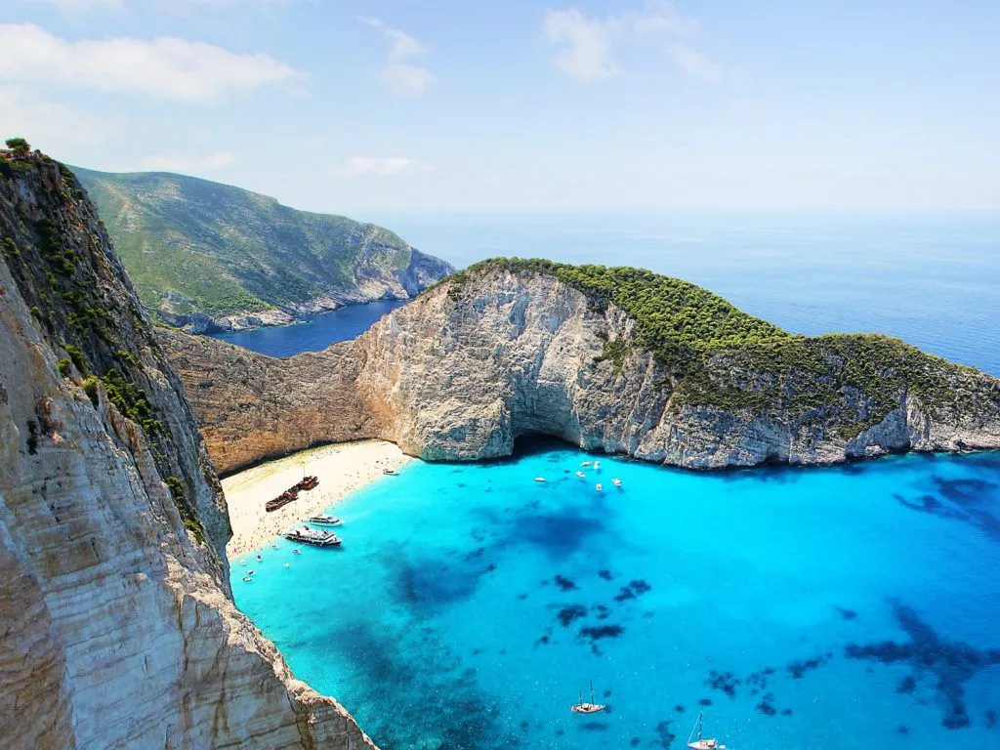
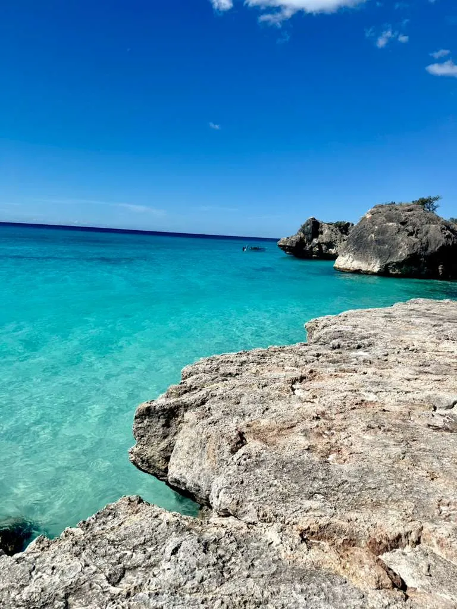
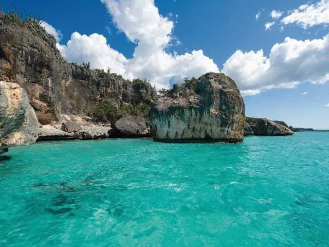

Beaches

Beautiful Beaches of the Dominican Republic
The Dominican Republic is home to some of the most beautiful beaches in the Caribbean. From Punta Cana to Samaná, visitors enjoy white sand, crystal-clear water, and tropical landscapes.

Punta Cana
Punta Cana is famous for luxury resorts, clear turquoise water, and relaxing beaches visited by tourists from all over the world.

Bávaro Beach
Bávaro Beach offers soft white sand and calm water, making it perfect for swimming and relaxing.

Samaná
Samaná is known for natural beauty, waterfalls, and peaceful beaches surrounded by nature.
Beach Gallery



